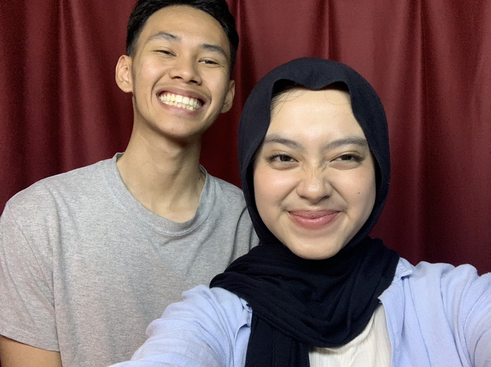

Terakhir Banget

Sayangku, Farisa,
Aku berterimakasih sekali sama kamu karena telah menjadi sosok penting dalam hidup aku. aku sayang banget sama kamu dan pasti kamu udaah tau wkwkwk.
aku bikin ini sengaja buat ngerayain ulang tahun kamu. semoga kamu suka sama hadiah dari aku ini heheh.
I Love You,
Zahran